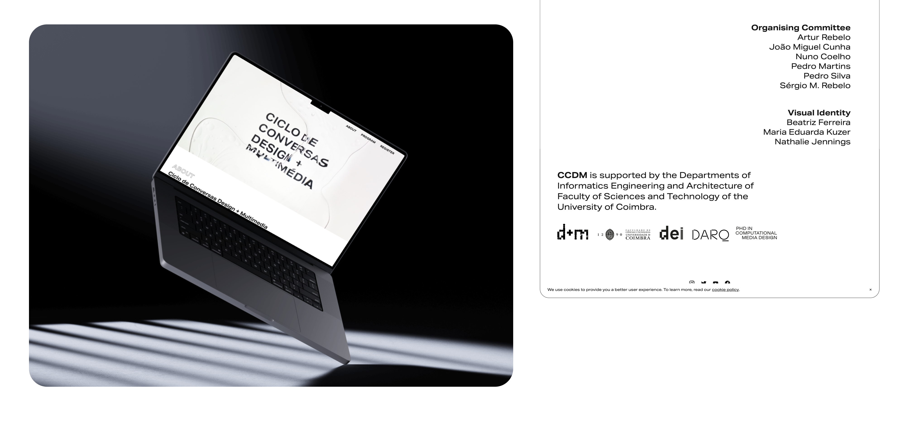
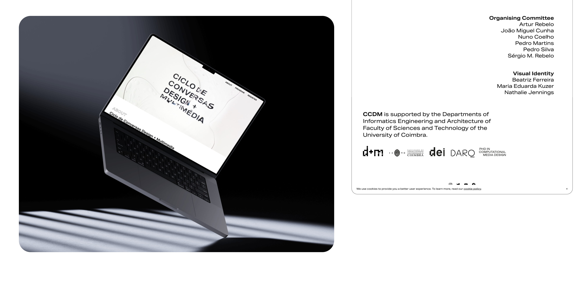

I was one of the 3 members that led the Identity and Design of the event — CCDM.
Main Tasks
Clearly outline the event's purpose, target audience, and desired outcomes. Providing the foundation for
the brand identity.
Design a distinctive logo and visual elements that reflect the event's theme, personality, and message.
Consistency in color schemes, typography, and graphics is essential.
Create a professional event website and maintain active social media profiles that align with the brand
identity.
Design promotional materials such as flyers, posters, banners, and brochures that showcase the brand
identity. Ensure these materials convey key information effectively.
The Challenge
The challenge was to develop the event's brand and visual identity and oversee design across
all
motion, graphic and typographic applications. And created all the elements — from branding to web — taking
inspiration from experimental technics.
Speakers and works
Idea
We wanted to show how it is possible to combine manual techniques and design with the digital
world — reflecting on the theme of the conferences. This identity reflects in an experimental design
created to make a distinctive appearance and project a contrasting communication between simplicity and
creativity.

 


 Visit the website
Visit the website